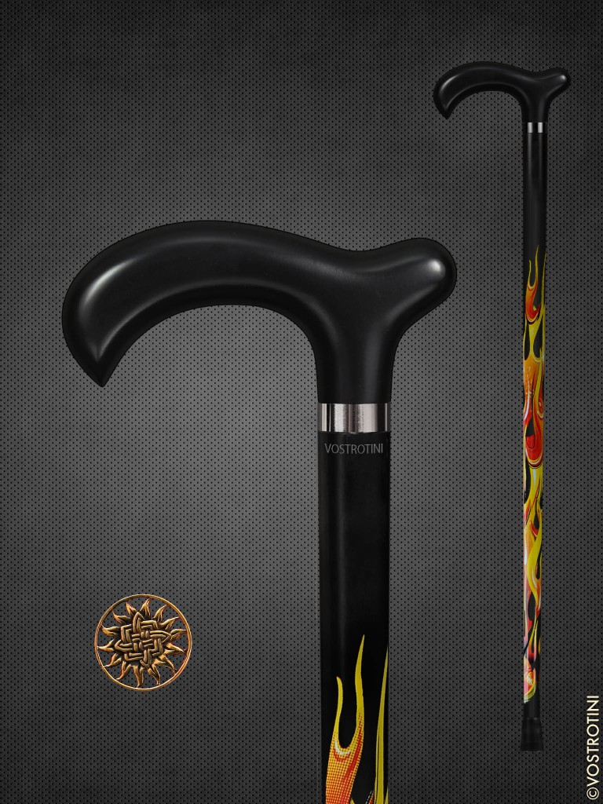

Огненная трость. Сварог — славянский бог огня. Знаменитая трость с пламенем. Классический чёрный вороненый цвет рукояти подойдет к любому костюму. Пламя на трости — водостойкая наклейка. Трость в наличии.

Характеристики товара:
Модель трости: Сварог-огненная
Цвет рукояти: Вороненая
Материал рукояти: Кавказский бук
Цвет шафта: Вороненая
Материал шафта: Кавказский бук
Покрытие: Итальянский лак
Толщина: Изящная (Конус - сверху 25 мм, снизу 19 мм)